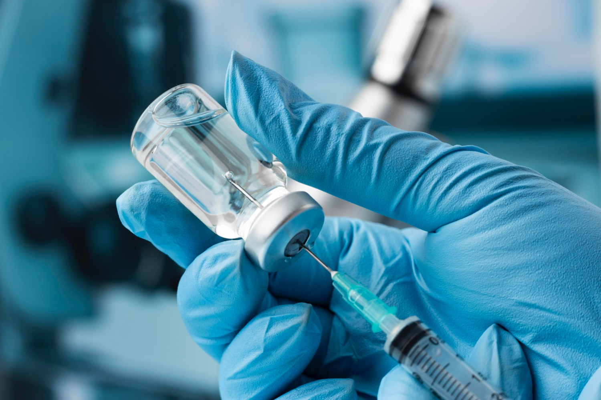
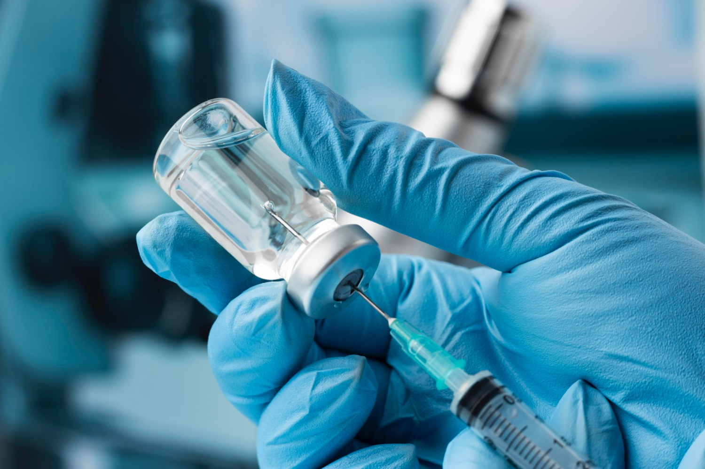
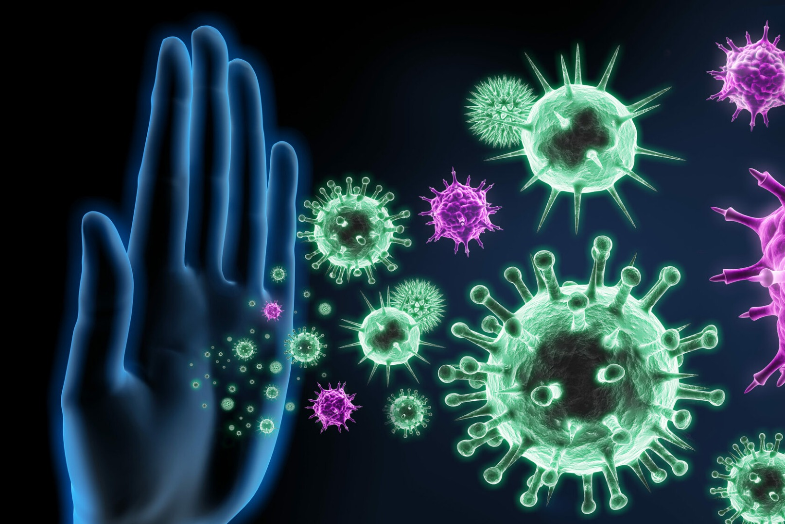

Что такое вакцинация?
Вакцинация - ценнейшая возможность сохранения здоровья и главный помощник иммунитета. Вакцинация позволяет переносить болезни в легкой форме или вообще их не переносить.
Почему она важна?
Вакцинация - ценнейшая возможность сохранения здоровья и главный помощник иммунитета. Вакцинация позволяет переносить болезни в легкой форме или вообще их не переносить.
Вакцина позволяет иммунитету адаптироваться к типу болезни, от которой разработана вакцина, но при этом само заболевание не будет протекать. Получается, что вакцина позволяет иммунитету уже заведомо иметь орудие для борьбы с заболеванием.
Так-как большинство вакцин являются неоднократно протестированными, то это значит что большинство из них - безопасны.
Разумеется, что у любого человека может сложится такое мнение о вакцинах. Так вот, оно ошибочное, и сейчас объясню почему. Вакцина является наилегчайшим способом защиты организма. Без вакцинации для выработки антител требуется перенести заболевание, а это опасно. Вакцина же предсталяет собой идеальный и зачастую безопасный вариант получения антител от заболеваний без самих заболеваний.
Вакцинация - ключ к здоровому миру, без которой
миру было бы сложнее существовать.